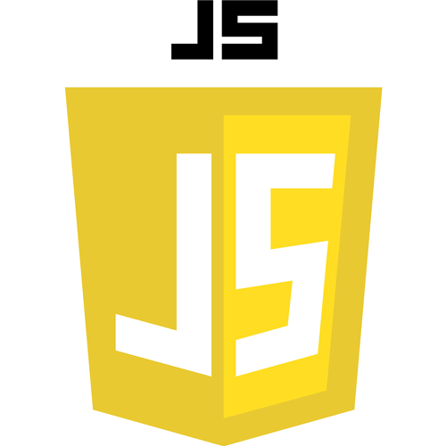
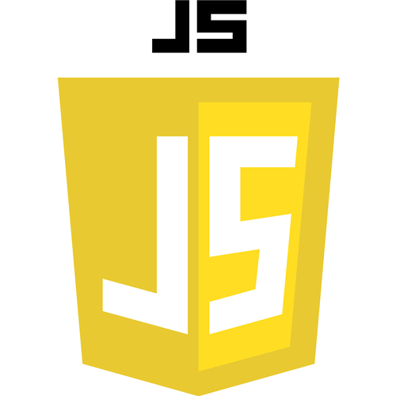

O mnie
Pierwsze proste serwisy tworzyłam...
...kilkanaście lat temu, jeszcze na studiach. Później zajmowałam się tym w pracy w agencjach reklamowych, ale ostatecznie zdecydowałam się na rozwój w kierunku marketingu. Teraz chcę wrócić do web developmentu.
Mam doświadczenie biznesowe w branży IT oraz umiejętność spojrzenia na tworzone strony i aplikacje z perspektywy ich użytkowników. Jestem także bardzo zmotywowana do tego, żeby jak najszybciej uzyskać wysoki poziom znajomości technologii aktualnie niezbędnych w tej pracy.
Umiejętności
Kilkanaście lat przerwy w kodowaniu...
...sprawiło, że wielu rzeczy musiałam się uczyć właściwie od nowa. Dotyczy to w szczególności języka JavaScript, który poznawałam zupełnie od podstaw. Ale to na tyle fajna zabawa, że idzie dość szybko, pomimo chwilowych frustracji "dlaczego nie działa" ;-)
Zdaję sobie sprawę, że...
...poniższe umiejętności, to dopiero set podstawowy i muszę sie jeszcze bardzo wiele nauczyć. Staram się jednak skupiać na maksymalnie dwóch nowych technologiach na raz, żeby poznać je na poziomie pozwalającym na w miarę komfortowe poruszanie się w kodzie.
Główne technologie, z którymi pracuję:


 

Pozostałe:


Aktualnie...
...skończyłam kurs JS na Udemy (37 godzin materiałów, od podstaw w ES6, link do kursu) oraz kurs podstaw Git. Skrypty osbługujące zdarzenia na tej stronie napisałam sama, czasem wspomagając się zasobami internetu.
Co dalej? W najbliższym czasie szlifowanie JS oraz frameworki. Za xxx dni znów prawdopodobnie zaktualizuję te stronę o kolejne skille. :~)
Źródła wiedzy...
...z których korzystam są bardzo różne. Uczę się sama z kursów na Udemy i innych portali, oglądam dużo tutoriali na Youtube, lubię vlogi programistów i nagrania prelekcji z konferencji. Czytam też książki, artykuły i dokumentację techniczną oraz słucham uważnie tych, którzy siedzą "w tym" dłużej. Codziennie uczę się czegoś nowego.